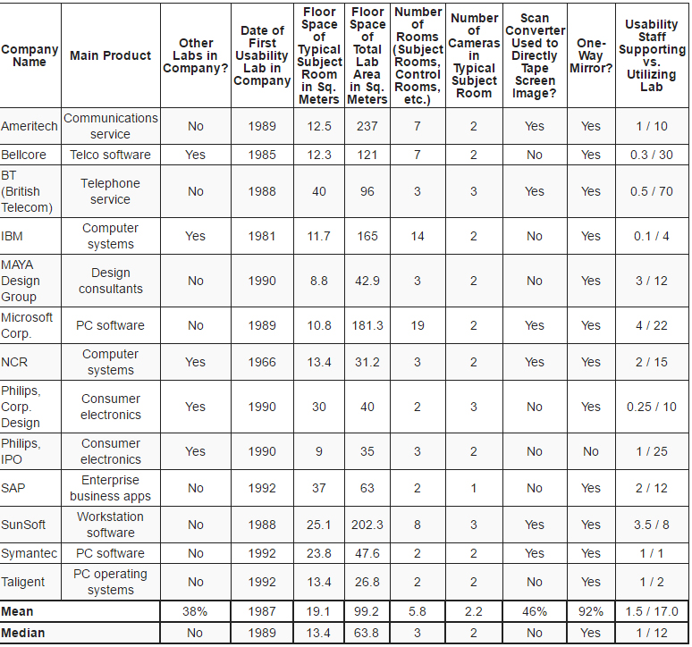

Usability Testing in relation to Web Design
- Jakob Nielson created the heuristic evaluation method for usability testing, in 1994, making it accessible to a wide range of companies at low cost. Rolf Molich created a series of Comparative Usability Evaluations, resulting in a set of standards and practices for usability testing.
The Myth of Usability Testing
- In the United States, usability testing originated with the creation of several and independently operated labs. NCR incorporated a usability lab in 1966, followed by IBM in 1981, Belcore in 1985, and Ameritech in 1989. While Jakob Nielson did not create the idea of usability testing, his substantial contribution and research in process development popularized the methods behind successful human and computer interactions.
Usabilty Labs

- Company usability labs incorporate the market standard for user testing; university research labs yield the best practices for today's users; blogs can introduce new techniques by including personal experiences, and forums with input from other usability testers that include the latest tools and resources.
Traveling Usabilty Lab
- The future holds an increase in accuracy in testing overall. Such as, asking the right questions, choosing the right people, integrating context and environment that is reflective of the target audience. New developments include remote usability testing with portable lab equipment, in order to make the user more comfortable in their surroundings. Also, iterative usability evaluations, which is conducting usability test with results that can be easily generalized to other users. As well as, hallway testing that tests a random sample from your targeted audience rather than trained developers.
The Myth of Usabilty Testing
An Introduction to website usabiltiy testing
- Usability testing is usually a behind the scenes process that is comprised of key elements such as learnability, memorability, efficiency, satisfaction, and errors. Our insight for usability testing is an extremely important step in the development process. The method needs to be able to adapt to the ever-changing world of technology. Have you ever been in a website that you do not know how to navigate? It is frustrating, inconvenient, and an overall hassle. For companies it can create a lost in profit, customers, and satisfaction. Usability testing is usually behind the scenes process. A little known fact about usability testing is that it is an on-going process that requires continuous testing and revisions to build and maintain efficient, easy to use products.
Principles of Website Usabilty